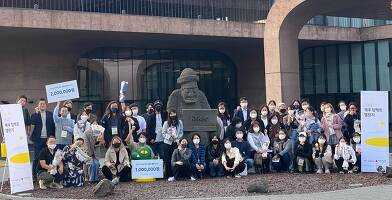
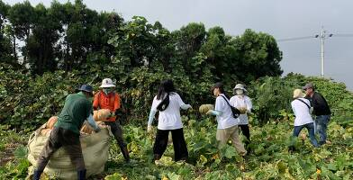
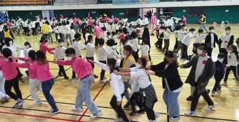

Live 제주
-
 함께 만들어가는 제주다운 변화, 제주 임팩트 챌린지
디자인 씽킹으로 제주에 새로운 변화를 만들어보자! 카카오가 2021년 시작한 제주 임팩트 챌린지는 올해에도 계속되었습니다. 제주 지역 문제에 대한 관심과 해결하고자 하는 의지가 있...
-
 건강한 농촌을 이끄는 슈퍼농부
농업현장에서 농촌의 문제를 발견하고 직접 해결해 나가며 건강한 농촌을 만들기 위해 다양한 프로젝트를 진행합니다.
-
 놀이로 만드는 행복한 아이들의 세상
아이들이 행복한 제주를 위해 친구들이 함께 다양한 놀이 활동을 체험할 수 있는 놀이존 프로젝트를 추진합니다.